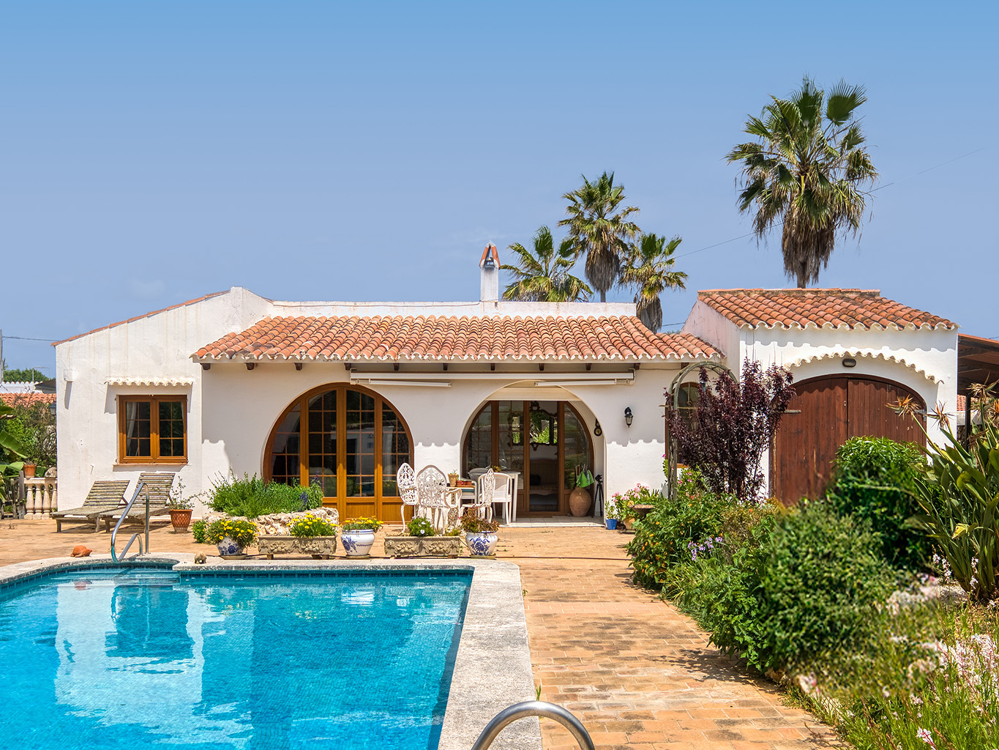

€650.000
Trebalúger, Es Castell · Menorca · Spain
Exact character brief at a bargain ask: whitewash + terracotta, dark-wood arched French doors, covered porch with exposed beams, cozy beamed salón with wood stove, dry-stone garden wall and a generous built private pool with wrought-iron terrace furniture. Habitable and finished (not rustico/fixer). Distinct from board Trebalúger set (34494/93748/93771/90158) — different façade, 167/950 vs their sqm/land, and not the modern H3676 twin of 34494.
Opened 16 Sep 2026. Asking 650.000 €. Ref H3742. 3 beds / 2 baths; 167 m² built (128 m² useful) / 950 m² plot; private exterior pool + covered terraces; garage; mature garden. Marketing: espaciosa villa en Trebalúger, Es Castell. Photos verify arches, beams, built pool, dry-stone — not sleek-only. Not Sa Caleta. Multi-portal watermarks (Portal Menorca / Bonnin on some interiors) but no matching Bonnin/board ref at these specs.
Open the listing